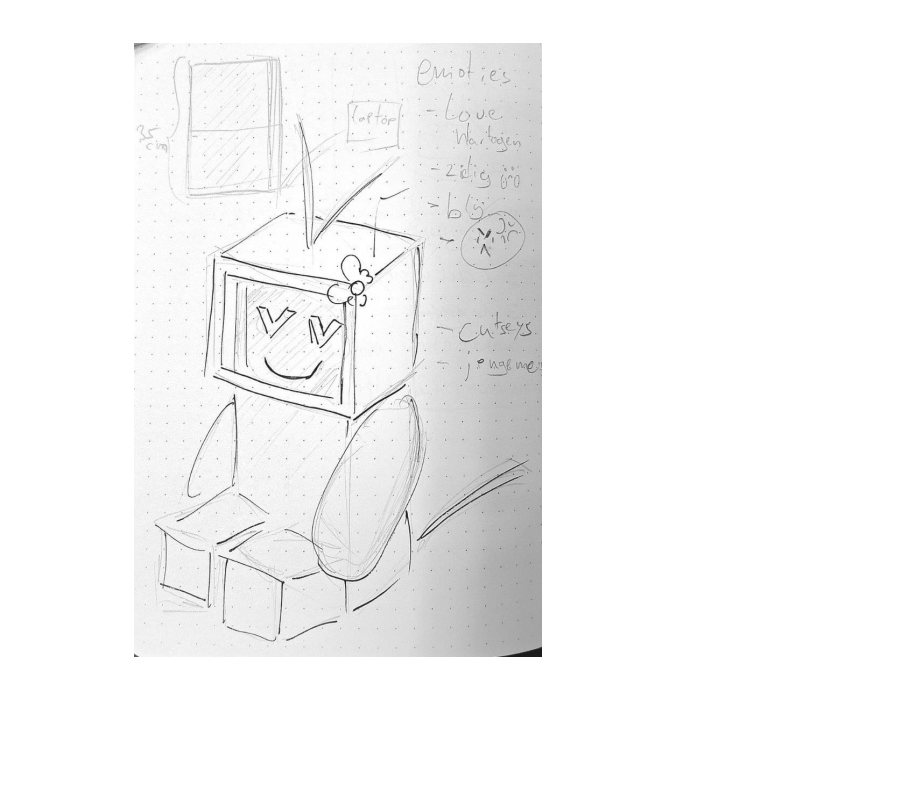
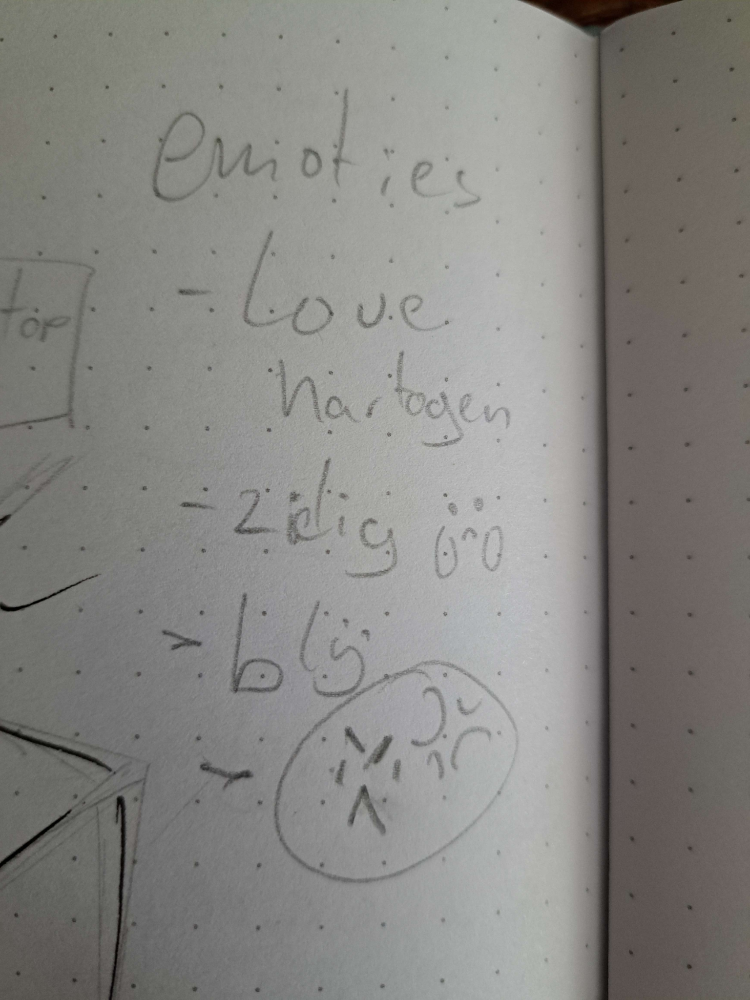
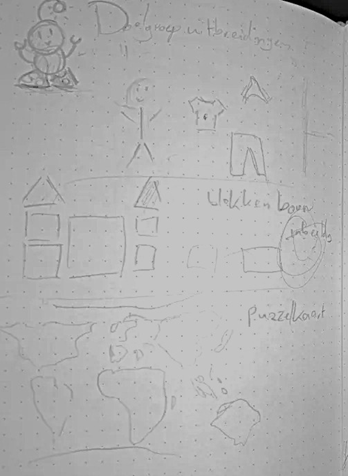
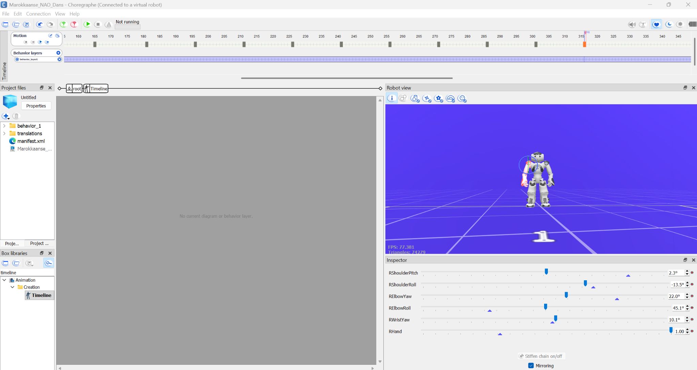
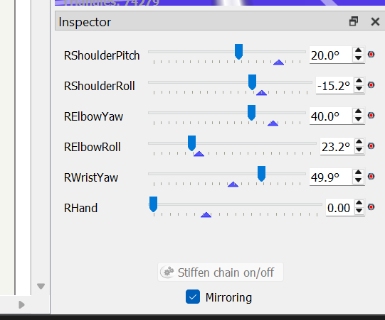
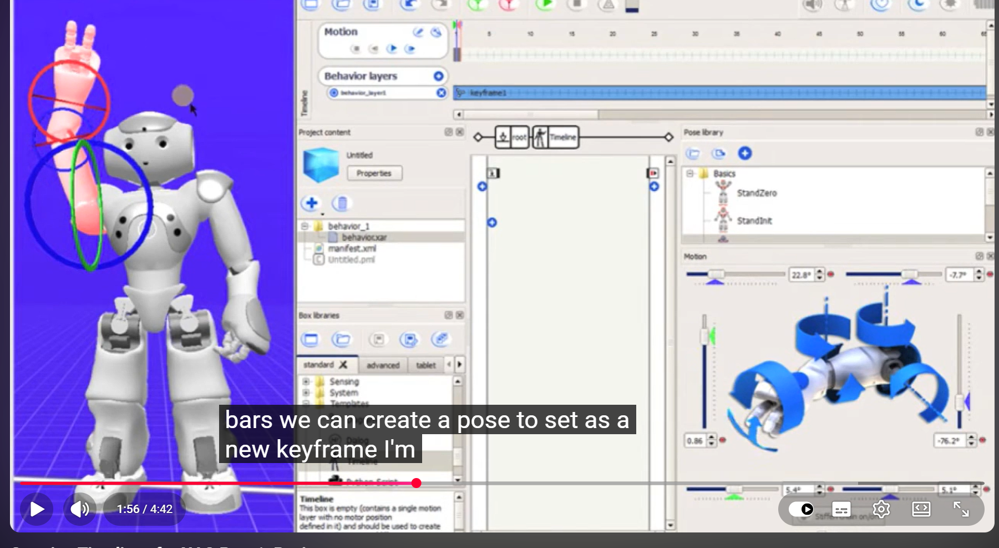

Over het project
Dit project kwam vanuit Digital Life. De opdracht was om te onderzoeken hoe embodied AI, vooral in de vorm van robotica, kan helpen om inwoners van Diemen op een laagdrempelige manier met elkaar te verbinden.
In het begin keken we vooral naar de risico’s van sociale robots. Denk aan privacy, misinformatie, verkeerde verwachtingen en het te snel vertrouwen van een robot. Later draaiden we dit om naar de light side: hoe kan een robot juist zorgen voor verbinding, plezier en inclusieve interactie?
Mijn rol
Als Creative Technologist werk ik vooral aan onderzoek, prototypes en robotinteracties. Ik combineer techniek en creativiteit door mee te denken tijdens brainstormsessies en samen met het team ideeën om te zetten naar iets wat we echt kunnen zien, testen en verbeteren, zoals interactieve prototypes en bewegingen voor de NAO-robot.
Binnen het project lag mijn focus vooral op onderzoek en het vertalen van inzichten naar praktische toepassingen. In het begin deed ik onderzoek naar privacyrisico’s van sociale robots, zoals dataverzameling via camera’s, microfoons en sensoren. Deze inzichten gebruikten we om een dark side prototype op te zetten.
Daarna deed ik samen met Dana onderzoek naar verschillende culturen in Diemen. Dat onderzoek gebruikten we later als basis voor de light side van het project. Tijdens het project werkten we iteratief: we bedachten ideeën, maakten prototypes, testten deze met gebruikers en verbeterden ze op basis van feedback.
Vaardigheden & Competenties
Onderzoek & Analyse
Onderzoek naar privacy, sociale robots, cultuurverschillen en gebruikersbehoeftes.
Prototyping
Van brainstormideeën naar interactieve prototypes en verbeterde concepten.
Robotica & Techniek
Werken met de NAO-robot en Choregraphe voor robotinteracties en bewegingen.
Probleemoplossend denken
Flexibel omgaan met technische beperkingen, zoals de beperkte beschikbaarheid van de robot.
Samenwerken & Communicatie
Afstemmen met teamleden, feedback bespreken en duidelijk communiceren over voortgang en keuzes.
Maatschappelijke impact
Rekening houden met privacy, inclusiviteit en de invloed van technologie op gebruikers.
Advies & Ontwikkelproces
Advies & Ontwikkelproces
Advies
Wij adviseren om sociale robots mensgericht en transparant in te zetten, met aandacht voor privacy, inclusiviteit en positieve interactie.
Ontwikkelproces
We werkten stap voor stap met onderzoek, brainstormsessies, prototypes, gebruikerstesten en verbeteringen. Door beperkte robotbeschikbaarheid moesten we flexibel plannen en taken goed verdelen.
Van dark side naar light side
Dark side
We onderzochten risico’s van sociale robots, zoals privacy, misinformatie, bias en te veel vertrouwen.
Prototype met emoties
We maakten een kartonnen robot met emotie-animaties om te laten zien hoe snel gebruikers vertrouwen kunnen krijgen in een sociale robot.
Light side
Daarna gebruikten we onze inzichten voor een positieve toepassing met cultuur, muziek en interactie met de NAO-robot.
Dark side prototype
Voor de dark side maakten we een prototype om te laten zien hoe snel een robot vertrouwen kan opbouwen door emoties en uiterlijk. Dit hielp ons om kritisch te kijken naar de invloed van sociale robots op gebruikers.

Eerste conceptschets van de robot met emoties.

Schets met emoties zoals blij, verdrietig en liefdevol.

Kartonnen prototype met emotie-animaties.
Light side onderzoek en concepten
Voor de light side deden we onderzoek naar verschillende culturen in Diemen. Dit hielp ons om ideeën te bedenken die beter passen bij verschillende leeftijden, achtergronden en interesses.

Ideeën voor interacties met kinderen, zoals puzzels en spelvormen.

Ideeën voor ouderen, waaronder muziek en het Hitster-spel.
Werken met NAO en Choregraphe
Voor het eindprototype werkten we met de NAO-robot in Choregraphe. We maakten bewegingen, poses en uiteindelijk dansjes die passen bij verschillende culturen. Zo werd het prototype interactiever en leuker voor gebruikers.

Choregraphe omgeving met de virtuele NAO-robot.

Instellingen voor armbewegingen en poses.

Voorbeeld van het maken van keyframes en bewegingen.
Ontwerp en technische realisatie in Choregraphe.
Eindprototype Demonstratie Video's
Marokkaanse dans demonstratie.
Surinaamse dans demonstratie.
Spaanse dans demonstratie.
Indiase dans demonstratie.